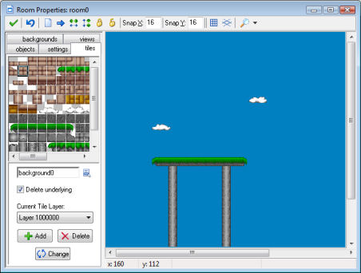

The standard way out, used in many games, is that the walls and other static objects are actually drawn on the background. But, you might ask, how does the game know that an object hits a wall if it is drawn on the background only? The trick is as follows: You create just one wall object in your game. It must have the right size but it does not need to look nice. When creating the room, place this object at all places where there is a wall. And, here comes the trick, we make this object invisible. So when playing the game you don't see the wall objects. You see the beautiful background instead. But the solid wall objects are still there and the instances in the game will react to them.
You can use this technique for any object that is not changing its shape or position. (You cannot use it when the object must be animated.) For platform games, you probably need just one floor and one wall object, but you can make beautifully looking backgrounds where it looks as if you walk on grass, on tree branches, etc.
To add tiles to your room you first need to add a background resource to your game that contains the tiles. If you want to have your tiles partially transparent, make sure you make the background image transparent when loading it. When adding the background resource indicate that it must be used as a tile set. Next indicate the size of each tile and whether there is room between the tiles, as was indicated in the chapter on background resources.
Now, when defining your room, click on the tab tiles. The following form is shown (actually, we already added some tiles in this room and switched off the grid).

At the left top there is the current set of tiles used. To select the set, click on the menu button below it and select the appropriate background image.
Now you can add tiles by selecting the tile you want at the top left, and next clicking at the appropriate place in the room at the right. This works in exactly the same way as for adding instances. Underlying tiles are removed, unless you uncheck the box Delete underlying. You can use the right button to delete tiles. Hold the <Shift> key to add multiple tiles. And hold the <Ctrl> key to move tiles to a new place. The <Alt> key will avoid snapping to the gird. Also there is again a pop- up menu when you hold the <Ctrl> key and click on a tile with the right mouse button. The buttons in the toolbar will now clear all tiles, shift all tiles, sort the tiles or lock/unlock them. (Actually they only operate on the current layer; see below.)
In some situations you might want to put a part of the background in the room that is not exactly the size of a tile or consists of multiple tiles. This can be done as follows. In the top-left image press the left mouse button while holding the <Alt> key. Now you can drag an area which you can then place in the room in the same way as tiles. To select multiple tiles, hold the <Shift> key. Note that this only works correctly when there is no separation between the tiles. If you want to select an area that is multiple of the room grid size, hold the <Ctrl> key rather than the <Shift> key. (Note that you can actually change the key you hold during the dragging. This can sometimes be useful.)
Tiles can be placed in layers at different depths. At the bottom you see the current depth. Default this is 1000000 which is normally behind all instances. So the instances will move in front of the tiles. You can use the Add button to add new tile layers, each with a different depth. Negative depths can be used to put tiles in front of instances. If you also give objects different depths you can put them between different tile layers. If you press Delete you delete a tile layer together with all its tiles. (There must always be at least one layer.) If you press Change you can change the depth of a tile layer. If you give it the same depth as another layer, the layers are merged.
Using tiles is a powerful feature that should be used as much as possible. It is much faster than using objects and the tile images are stored only once. So you can use large tiled rooms with very little memory consumption.
| Converted from CHM to HTML with chm2web Pro 2.85 (unicode) |